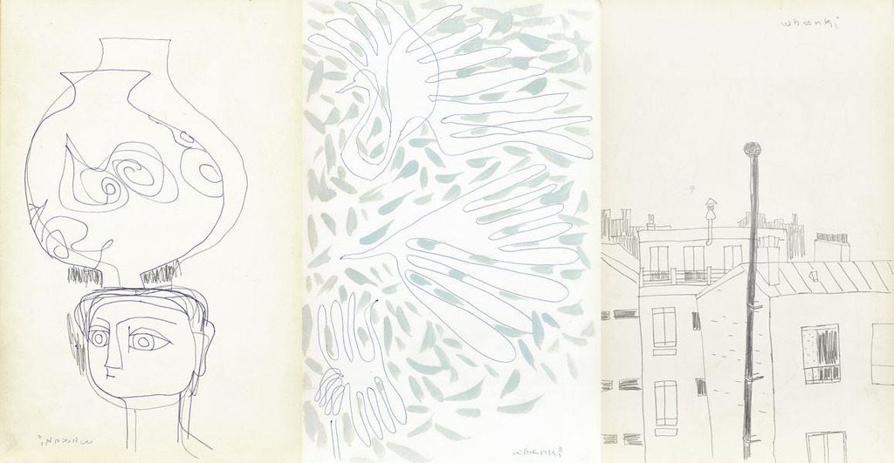
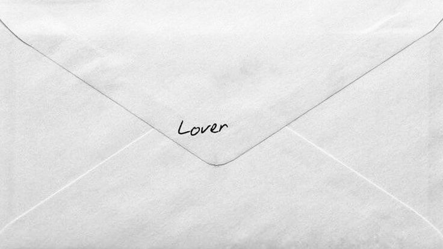

안녕하세요. 이곳에서는 화백 김환기가 그의 아내 김향안에게 보낸 편지를 스크랩합니다.
대부분의 편지는 도서 '우리들의 파리가 생각나요'에서 발췌하였으며, 계속 추가됩니다.
김환기의 드로잉이나, 부부의 사진도 함께 스크랩하고 있습니다. 제보나 문의를 환영합니다.
연락은 제 인스타그램으로.
향안에게
나 지금 들어왔어요. 아까까지 먹었던 것이 금방 또 배가 고파요.
아이스박스를 열어보니 핑크빛 포도 한 송이가 남아 있어요.
참, 포도를 보면 포도를 먹으면, 우리들의 파리가 생각나요.

환기가
우리들의 파리가 생각나요
향안에게
1995년 멀리 파리에서
첫 성탄절을 맞이하고 있을 나의 향안에게.
행복과 기쁨이 있기를 바라는 마음으로 진눈깨비 날리는 성북동 산 아래에서
으스러지도록 안아준다 너를
나의 사랑 '동림이'

수첩에 빛깔을 칠하다보니 또 밤이 깊었어.
오늘 낮에 1시간 자기는 했지만. 어때? 이렇게 어떻게 해가면 될 것 같아요? 좀 달라져야겠는데.